Japonya’da müzik hayat kurtarır mı?
Prenses seni de anlıyorum matematik falan adamı bayar haklısın, gençsin, hoplayıp zoplayasın var ama madem çılgın parti kızıymışsın Visual Kei ile tanışmanın tam vakti!…
Dünyanın ikinci en büyük müzik endüstrisi Japon müzik endüstrisi. Böyle dev bir sektörde underground ve indie tarzların yükselmesi biraz zor. Visual Kei, Japonya’dan çıkan ve son yıllarda özellikle Latin Amerika’da ve Avrupa’da yaygın bir hayran kitlesi edinmiş bir müzikal şölen. Kimileri Visual Kei’nin bir genre değil müzisyenlerin görsel tarzınının anlatımı olduğunu iddia ediyor. Sebep: Bünyesinde pek çok farklı garabetliği barındırması. Kısaca anlatmak gerekirse… Geleneksel kabuki, ultra androjen, glam rock, hair metal, speed, pop, funk, SCREAMO, sınırsız lolipop, fanlar, konser salonlarını ateşe verecek kadar delirmiş anti-fanlar ve tabii bayanlara özel fanservice…. Pek çok alt türevi vardır. Bayıldığımız çoğu anime müzikleri v kei gruplarından çıkmadır. İlginç tarzları da yine pek çok anime kahramanının saç ve giyim tarzına ilham kaynağı olmuştur. (O abartılı pelerinler, Sailor Moon kostümleri, cosplayercılar nerden çıktı sanıyorsunuz?) İtiraf etmeliyim ki v kei herkesin beğeneceği bir tarz değil. Şahsen benim ilk aşkım David Bowie (Ziggy Stardust döneminde) olduğu için tarzlarına bayılıyorum. Müziğe gelince… Genelde orta yol pek mevcut değil; ya seveceksiniz ya nefret edeceksiniz. Malum dünya sahnesinde tarihe geçmiş ultra popüler çok fazla Japon şarkıcı yok. 🙂
Çılgın metalci yıllarımda neyse ki kısa sürede atlattığım “İskandinav black metal fetişimden” sonra işin thrash ve metal yanı beni pek zorlamaz lakin, “zoiinnng zonnnn” gitar sesi eşliğinde çığlık atan adamlar ne kadar süre dinlenebilir pek bilmiyorum.. V kei’inin tarihçesi en az klasik rock tarihi kadar geniş olduğundan tam bir antoloji yapabilmek için abartmıyorum 20 bölümlük bir seri lazım, o yüzden ben dipten başlayıp sevdiğim bazı arkadaşlardan bahsedeyim, siz de aralarından beğendiklerinizi seçip… Doğruuu youtube’aaaa. Kahrolsun Sopaaa ve KALTAK kızkardeşi PİPAaaa + akraba evliliğinden doğma kuzenleri ACTA! Paylaşım engellenemez!!!
Yoshiki.
X Japan
Heat cannot be separated from fire, or beauty from The Eternal.
~Dante Alighieri
|
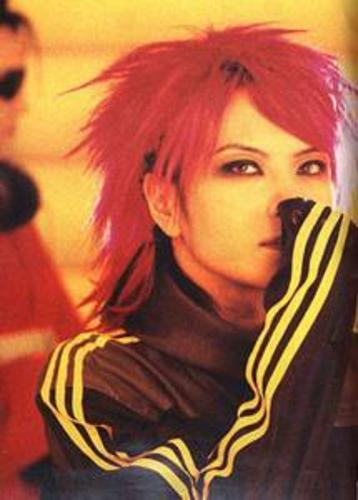 Pink Spider |
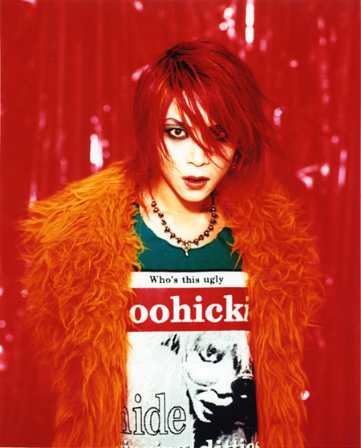 Hide neşeli bir gününde. |
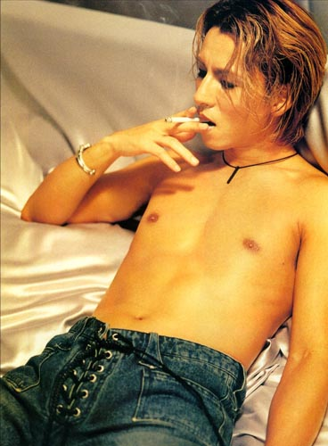 Grubun "Sex Kitten'ı |
Bu adamlar her şeyi başlatan abiler. Pembe örümceğimiz Hide, Japonya’nın gelmiş geçmiş en önemli gitaristlerinden. Visual Kei’ye bağışıklığım X Japan’ın eski fanlarından biri olmamdan ileri gelir efenim. ’94 yılında bendeniz henüz 14 yaşında taze bir rockçıyken yakın arkadaşımın Tokyo’dan edindiği mektup arkadaşı yazın İstanbul’a ziyarete geldi (mektup arkadaşı falan vardı o zamanlar. İsa ve havarileriyle de takıldık bir dönem). 16 yaşındaki Tokyo’lu Sato’yu havalanından karşılamaya gittik ve uçaktan inen şey… Ne desem o dönem için beynimde bir infilaka sebep olmuştu. Güvenlik görevlileri de ayrı patlamalar geçirmekteydi. Abartmıyorum şöyle bir şey indi uçaktan:
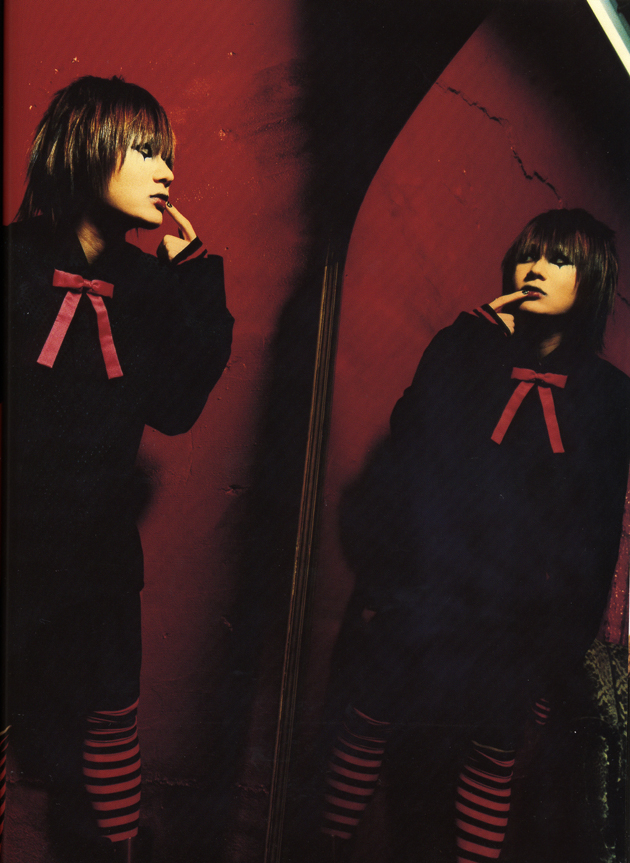
Sato’nun mektup arkadaşı bizim kızcağız (ki kendisi o dönem Mustafa Sandal hayranı mülayim bir insandı) anında krizlere girdi. “Kızım Sultanahmet’e falan nasıl götüreceğiz bunu. Bizi recmedecekler!” modunda takıldı kaldı. Bizim kanka histeri krizi geçirince çocuk başıma kaldı. Ben de buna yaşlı amcalar gibi; “Bak burası Türkiye azıcık makyajı, eteği, derileri falan yok et. Biraz sade takıl.” dedim ve ertesi gün şuna benzer bir şekilde karşımıza çıktı:
Ben de makus talihimi kabullenip başladım bu deliyle Fatih senin Kariye Müze’si benim gezmeye… Karşılığında Sato da beni v kei’yle tanıştırdı.
Pek çok ergen kızcağız gibi benim de duvarımda o dönem ilahlarımın posterleri vardı. (Syd Barret, Kurt Cobain ve henüz ilk albümünü yeni çıkarmış olan Radiohead. Evet o grubu ben keşfettim!.) Ne yazık ki yanlış atlara oynamıştım. Kız arkadaşlarım boybandlere hasta olup neşeli pop şarkılar dinlerken benim fanlık yapacağım duvar posterlerim hiç iyi durumda değildi. Syd zaten çoktan kafayı yemişti, Kurt desen nisan ayında beynini garaj duvarlarına yapıştırmaya karar vermişti ve Thom Yorke her ne kadar hayatta olsa da her an inme geçirecek (ya da geçirmiş) gibi bir hali vardı. Dolayısıyla acilen müziği annemle babamı Thom Yorke’dan daha fazla çıldırtacak yeni birini bulmalıydım. (bunu iyi bir evlat olarak onlara borçluydum tamam mı?)
Aşağıdaki şarkı X Japan’ın Hide ölmeden önce verdiği son konser çekimlerinden:
Grup bir süreliğine müziğe ara vermeye karar verdiği için hem fanlar hem de X Japan konser boyunca tepinerek ağlamış. Klip o son konserden Endless Rain parçası. November Rain tadında rock balladlarına dayanamıyorsanız şarkı biraz işkence gibi gelebilir ama sabredip ya da çizgiyi kaldırıp son 6 dakikaya gelirseniz hayatınızdaki en adanmış konser kitlesini görmüş olacaksınız. Şehir efsanesine göre o gün X Japan sahneden indikten sonra bu zikir 15 dakika boyunca devam etmiş. ENDLESS RAIN, FALL ON MY HEART. Kokoro no kizu ni. Let me forget all of the hate, all of the sadness. Ahh ahh şu konser için Roseland Newyork’taki Portishead konserini bile satardım.
Tam kendime neşeli bir grup buldum diyip Hide’in pembe saçlı posterini duvarıma asmışken bir gece geç vakit annem. “Kızım telefonda bir manyak var toranaga mı diyor… bişey bişey … Ağlıyor. Git bir bak.” Ağlamaktan konuşamayan Sato’dan kısa sürede Hide’ın akibetini öğrendim. Tam bir rock yıldızı olduğundan bir otel odasında kendini asarak intihar edivermiş. Bir sahne şovu üzerinde çalışıyordu ya da kendini asası geldi ya daaa…. Erotic asphyxiation. (EA ve rock yıldızları nedir bu ilişki?) Hide’ın son şarkısı Pink Spider zaten bir nevi intihar mektubunu andırıyordu ve ben edilgen ergen hıyarı çoktan saçımı pembeye boyamıştım. Pink Spider, Hide’ın lakabı olduğu için aşağıdaki şarkının anlamı aslında gayet açık.
Ondan sonra lise hayatım boyunca her pazartesi sabahı İstiklal Marşı töreninde pembe kafam yüzünden kafama yediğim darbeler beni daha güçlü bir birey haline getirdi. (Bugün topluma faydalı bir insan olduğum için gurur duyuyorum. Mesela hala tek bir insan bile öldürmüş değilim.) Yıllar sonra youtube sağolsun nihayet Sato’nun günlerce anlattığı Hide’ın cenazeni seyrettiğimde gizli gizli biraz ağladımı itiraf ediyorum ama seyredince siz de göreceksiniz. Her zaman düzenli ,tek sıra japonları ancak bu kadar delirmiş görebilirsiniz. Tokyo’da o boyutta bir kalabalık bir daha hiç kimse için toplanmadı.
Özellikle son birkaç dakikayı seyredin derim. Ben genelde Yoshiki’nin elleri Hide’ın son mektubunu okurken titremeye başladığında kapatıyorum. Fena oluyorum. X japan fanları dünyanın en adanmış fanlarıdır. Cenaze klibinde neler döndüğünü youtube sayfasındaki açıklama bölümünde okuyabilirsiniz. Birebir çeviri mevcut.
Ben de bu arada Sato’nun önümde açtığı glam çılgınlıyla beraber kısa sürede ondan aparttığım kasetlerle X Japan ve Luna Sea hayranı oluvermiştim. Daha world music karizması ortalıkta yokken ben bu adamları dinleyip hisleniyordum.(Evet pek world music sayılmıyorlar ama caponca en azından world!?!? yok olmadı değil mi nerde Gogol Bordello karizması?) O dönem pek çok boybandci arkadaşımı da zehirledim. Pişman değilim. Sato da masmavi saçları ve acayip çengelli pantolonlarıyla 7 /24 hardcore V Kei takılıyordu. Kabuki nedir, androjen estetik nedir bunların ilk geyiğini o zamanlar yaptık. Visual Kei’nin en büyük “gimmicklerinden” biri estetiğe cinsiyet rollerinin tepesinden bakmaları. Beğendikleri şeyi giyiyorlar kısaca. Eğer bu deri etek ve jartiyerse yapacak bir şey yok. Makyaj yapıp, ruj süren adamların illa gay olması gerekmediğini hatta karı manyağı olabileceklerini de yine külliyen Sato’dan öğrendim. Kocamustafapaşa’da esnaftan dayak yemeyi de tabii.. Siz siz olun Visual Kei’ci arkadaşınızı oralara götürmeyin. Çünkü Kocamustafapaşa esnafı da “estetiğe cinsiyet rollerinin tepesinden bakan japon oğlanların” kafasını ayaklarının altında ezmeyi seviyor. Ne kadar renkli bir dünyamız var her çeşit hobi, her çeşit renk…. Youtube commentlerinde hemen her v kei adamının altına saf bir Americana (muhtemel rugby oyuncusu) mutlaka “Off taşş gibi karı. Caponlara hastayım abi!” diye bir şeyler söylüyor ve hemen altında grubun fanları adamı “Pşşt o erkek.” şeklinde uyandırıyorlar. Sonra rugbyci abinin kendine gelmesi uzun sürüyor. Ne sinir ne küfür off! İşte biz buna jrock dünyasında “Epic Mindfuck” diyoruz. Kız gibiler. Yoo hayır gay değiller. (Gerçi olsalar da benim için farketmez. Ama onca sime tüle rağmen çoğu evli barklı falan.) Siz zorlanmayın diye bir kaç makroyla hemen durumu açıklayayım:
| 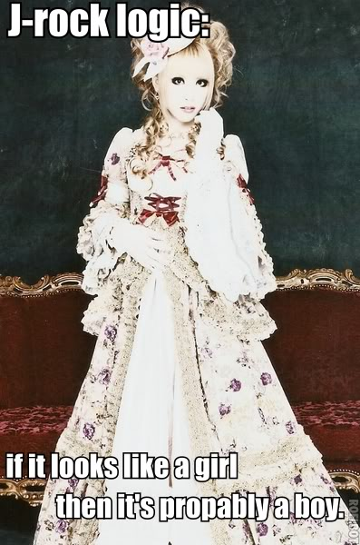 |  |
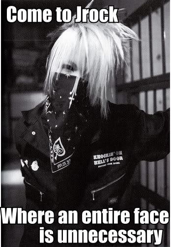 |
Makro yaratmak jrock severlerin hobilerindendir. (makrolar için xjrockmacros.livejournal grubuna teşekkür ediyorum. Sizin hasta beyinleriniz olmasa jrock dünyası çok daha sıkıcı olurdu.
Malice Mizer
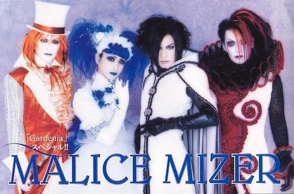
Malice Mizer seksenlerde hız kazanıp x Japan’ın dağılmasıyla artık ölmeye yüz tutan v-kei’yi tekrar dirilten gruplardan biridir. Lolita yazısında bahsettiğim gitaristleri Mana etrafında ördüğü gizem perdesiyle resmen zirveye çıktı. Mana’nın gerçek adı ve doğum tarihi bilinmiyor (bazı spekülasyonlar mevcut). Röportajlarda konuşmuyor (genelde grup arkadaşlarının kulağına fısıldıyarak iletişim kuruyor. çoğu röportajı ise bunun sessiz görüntülerinden ibaret, aşağıdan da sorular ve cevaplar altyazı gibi akıyor). Kendisi tüm gothik lolitaların ilham kaynağıdır, androjen olayını extreme seviyelere taşımıştır. Ben “drag queen” demek istiyorum ama demeyeceğim tabii (ve kesinlikle manyak Mana hayranlarının google translate ile bu siteyi dekrypte edip yazıyı okuduktan sonra Tokyo’dan üşenmeden gelip kafamı kapının üstüne çivilemelerinden korkmuyorum. Kızlaar naaber?) Mana-sama bir dönem neredeyse tüm visual kei sahnesini kontrol ediyordu. Sonra gruba egosu kendi kadar büyük Gackt’ı solist olarak aldı ve hepimizin gözleri önünde işler çığrından çıktı. Mana ne kadar karanlık ve gothikse Gackt o kadar poptu ve asıl niyeti “mainstream”e atlamaktı.
Gackt animelere ilham kaynağı olmuş muhteşem kılıklarıyla…
Gackt Yoko Ono’su en beklenmedik anda arkadaşlarını bırakıp çat diye gruptan ayrıldı. (O hala kendisinin gruptan çıkartıldığını iddia ediyor.) Gackt’ın hiç bir açıklama yapmadan grubu solistsiz bırakması en çok grubun duyarlı üyesi ve Gackt’ın yakın arkadaşı baterist Kami’yi etkiledi. (Bence zavallı Kami bu iki delinin arasında kaldı.) Ne yazık ki kısa süre sonra strese bağlı bir beyin anorizması yüzünden hayatını kaybeden Kami’nin ardından Mana, Gackt’a olan öfkesini hiç gizlemedi. Gackt’ın grubu bıraktığı son konserde Kami’nin saatlerce sahne arkasında gözyaşı döktüğü bilinmekte. Böyle duygusal adamlar işte. O sırada turnede olan Gackt Camui’ye kimse Kami’nin ölümünü haber vermedi. Yakın arkadaşının cenazesini kaçıran Gackt bu konudaki üzüntüsünü ve hatta duyduğu suçluluğu uzun yıllar sonra açıklasa da aradan 10 yıl geçmesine rağmen Mana ve Gackt bir daha bir araya gelmediler. Yakın takipçilerin söylediğine göre Gackt grubu terkedip yeni solist Klaha’dan sonra Malice uykuya yatınca Mana’nın kurduğu yeni grup “Moi di Moix” artık çok daha karanlık. V Kei ortamları pembe dizi tadında acayip hızlı ilerliyor. Birileri ölüyor… Öteki iyice deliriyor… Eski mavi gitarlı güzeller güzeli Mana gitti yerine kan lekeli gitarlı iyice tırsınç Mana geldi. Yine de Mana’yı seviyoruz o visual kei’nin gerçek prensesi (prensi?!?). Kendisi aynı zamanda Sezen Aksu gibi bir star fabrikasıdır. Paris’ten Kanon Wakeshima’yı buldu getirdi. (Kanon harbiden kız, tuzak falan değil yani.) Manyak çello ustası ve lolita prensesidir. Şarkıları anime müziklerine benzer evet çünkü Vampire Knight dahil pek çok animenin müzikleri Kanon’a aittir.
Asıl patlama ise Kokusyoku Sumire ile yaşandı. Bunlarda iki hatun (evet tuzak değiller) ve vodvil burlesque tadında süper bir tarzları var. Tüm bu gruplar arasında sadece bu iki şirine hepimizin takip ettiği “Evrensel Müzik” sitesinde yer alabilecek tiyniyette:
Şirinelerden bir tane daha gelsin:
Gackt (Da Bitch)
|
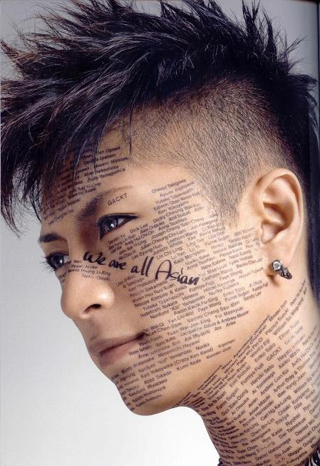 Deprem sonrası Gackt'ın düzenlediği yardım konserinin fotosu. Konsere katılan tüm grupları suratından okuyabilirsiniz. |
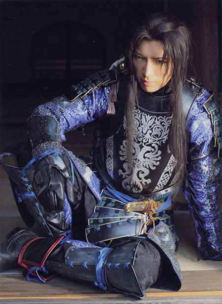 Şu aşamada ben bu adamın gerçek olduğunu sanmıyorum. Anime'misin? Gerçek misin? |
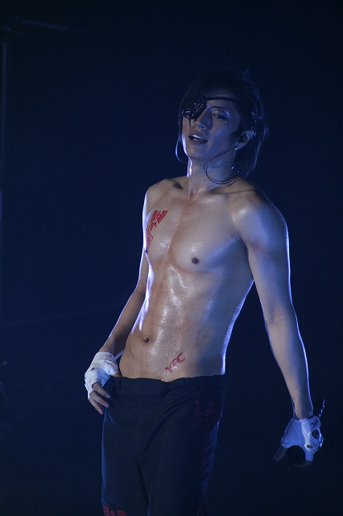 Japonya'nın “Top Secret” piyasaya sürdüğü ilk cyborg olabilir. |
Malice Mizer gibi hardcore visual kei bir gruptan sonra Gackt rotasını dramatik bir şekilde değiştirdi. Bugün kendisi Japonya’nın en büyük starlarından. Reklamlarda, dizilerde her yerde o. Yukarıdaki tabloid tarzı hikayeden Gackt Camui’yi Britney Spears sanmayasınız. Kendisi müzik hocası (nazisi) bir aile tarafından 4 yaşında Chopin’le eğitimine başlamış bir çeşit zorunlu dahi. Bacak bacak üstüne atıp nefis piyano çalar. Geleneksel shamisene’i çok iyi kullanıyor. Davul, trombon, trompet, bas, ve son konserlerinde gördüğümüz üzere keman çalabildiği enstrümanlar arasında! 400 yaşında çin hanedanından gelme bir vampir olduğunu iddia ediyor. (73 doğumlu… galiba kesin değil) Bu yüzden Çin’deki bir konserde başı belaya girmişti. Çinliler “Bizle alay ediyor bu!” diye isyan çıkardılar resmen ama böyle ufak şeyler Gackt’ı germez tabii. Otobiyografisinde yazdığına göre 7 yaşında Okinawa’da boğulmuş ve kalbi durmuş bu olaydan sonra ölülerle konuşabildiğini iddia ediyor. (“I see dead peoplee.” Pardon ama yapmak zorundaydım.) Bu yetenekleri(!) yüzünden ailesi onu kısa süreliğine bir hastanede tam izolasyonda nadasa bırakmış. Japon paparazziler bu hastane kayıtları sayesinde Gackt’ın gerçek adını, doğum tarihini buldular. Sırf ondaki bu yetenekler çocuğuna bulaşmasın diye çocuk yapmıyor.(yuh be Dexter bile baba oldu. sen ney mişsin?) Elektrik ampullerinden nefret ettiği için evinde aydınlatma olarak sadece mum ışığı kullanıyor. Gerçek bir şatoda yaşadığını söylemiş miydim? Evet adam harbiden şatoda yaşıyor ve odasında havuz kadar jakuzi var. Bence o kafasında gerçekten Lestat olduğuna inanmış. Bana söz düşmez. Bülent Ersoy’u bile solda sıfır bırakabilecek kadar diva talepleri ve nevi şahsına münhasır halleriyle Gackt tam bir rock star.. Russel Brand’in seveceği tarzda bir rock star. Final Fantasy oynarken bile oyunu bitirdiğinizde çıkan Genesis’i görünce bir an dumur oluyorsunuz çünkü finaldeki Genesis karakteri bildiğin Gackt. Ana karakter Cloud’un Gackt’tan esinlenildiğini bilmeyen yok ama bu yeni abi bizzat sesiyle, yüzüyle Gackt. “Ne arıyor bu adam ula oyunun içinde?” demeye kalmadan bir sonraki Final Fantasy’nin en baba karakteri Genesis’le tanıştığınızı farkediyorsunuz.
Adam kendini Final Fantasy’e bile soktu. Canı istese Gackt Pokemon’a bile girer. Pikaçunun ağzını burnunu kırar. Final Fantasy’nin meşhur kapanış müziği REDEMPTION’da Gackt’a aittir efenim:
Değişik bir espri anlayışı vardır. En çok şoförü ölünce üzüldü. Adamın arkasından şarkılar falan yazdı. Aşağıdaki black stone şarkısı Gackt’ın şoförüne özel. Klipte kamyonda giden grup üyeleri bir yandan çalıp oynayıp bir yandan devriliyor. Niye? Çünkü zavallıların artık şoförü yok!!! Onlar da bir partiyle bunu kutlamaya mı… Artık ne bileyim, ben de anlamadım.
Gackt Josh hartnett, Woody Harrelson ve Ron Pearlman’la başrolleri paylaştığı son filmi Bunraku ile Holywood’a nihayet sızdı. Film süper post apocalyptic/samuray filmi. Tavsiye ederim.
Hyde
| 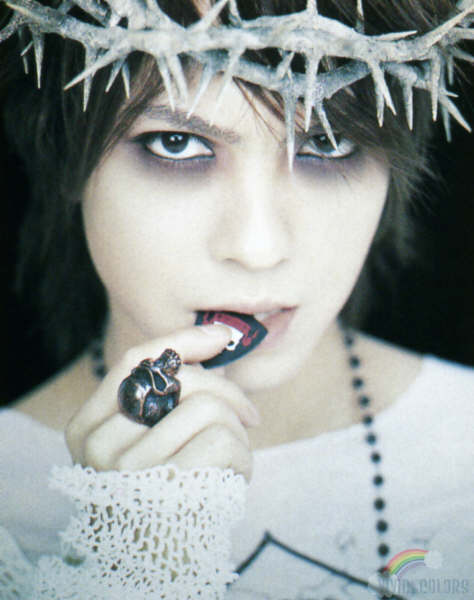 | 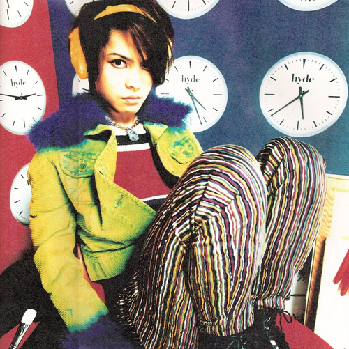 | 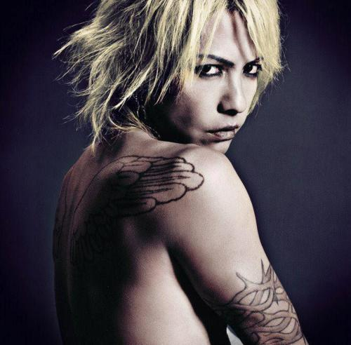 |
Hyde v. kei’nin en sevilen gruplarından L’arc en Ciel’in eski solisti. Gackt gibi ulaşılmaz ve sürreal bir tip olmadığından daha yaklaşılabilir. Sinemaya meraklı. Çok acayip filmlerde oynuyor. Kagen no Tsuki‘de İngiliz bir rockçının hayaletini oynamaya bile cüret etti ki duyup duyabileceğiniz en berbat ingilizceye sahiptir kendisi. Böyle bir özgüven işte. Hyde bu sene 43 yaşına bastı. Ne yapıyor bu adamlar Wolverine gibi adamantine falan mı kaplatıyorlar kendilerine anlamadım. Yaşlanmıyorlar bir türlü. Hyde yeni grubu Vamps’le beraber taze bir baba olarak rock roll’un keyfini sürüyor. JAPAN STYLE!!!
Kendisi Gackt’ın yakın arkadaşıdır. Arkası sağlam yani. Örnek: Gackt bir gün Matrix’i seyredip kendi Matrix’ini çekmeye karar verir. Zınk müzik şirketi milyonlarca dolar bayılır sonra bizimki filmi “Taiwan’da çekelim.” diye tutturur. Bu sefer stüdyo parayı akıtır. Son anda “Bu filmde vampirler eksik. Vampiri ille arkadaşım Hyde oynasın.” diye tutturur… Eşşek gibi her istediğini kabul ettiler tabii bunun. Sonuçta film tuttu mu? Tutmaz mı, Gackt yapar da tutmaz mı?
The Gazette
| 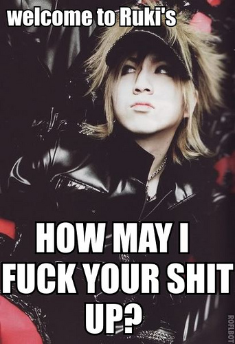 | 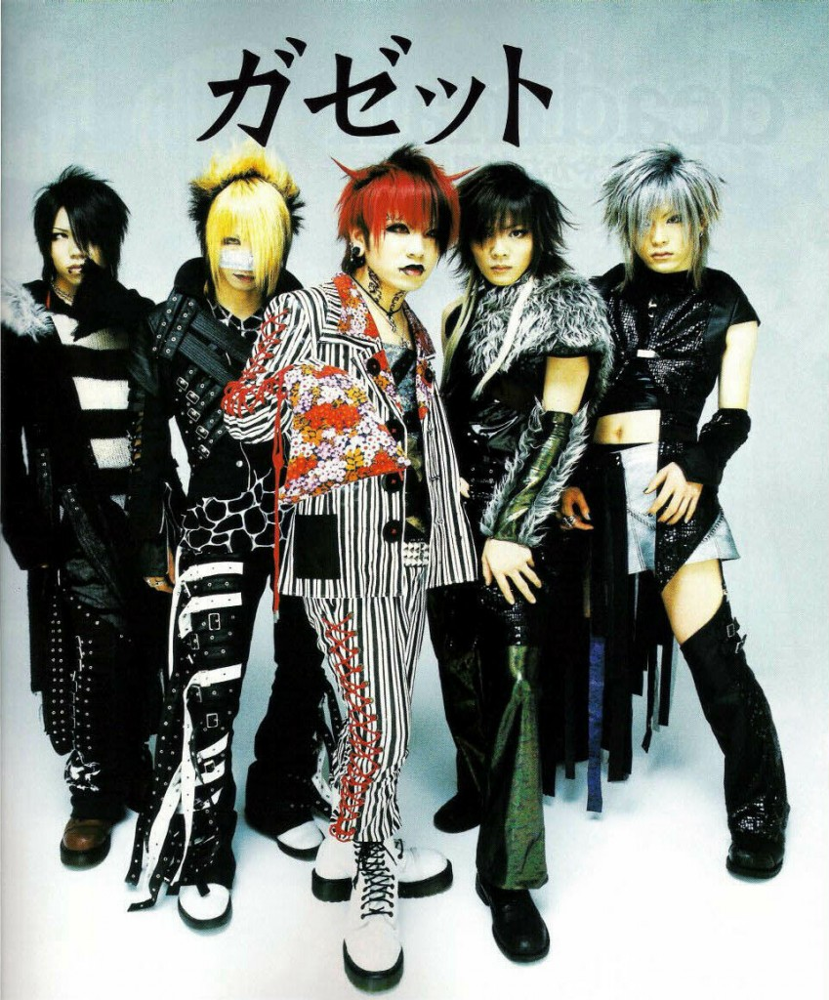 | 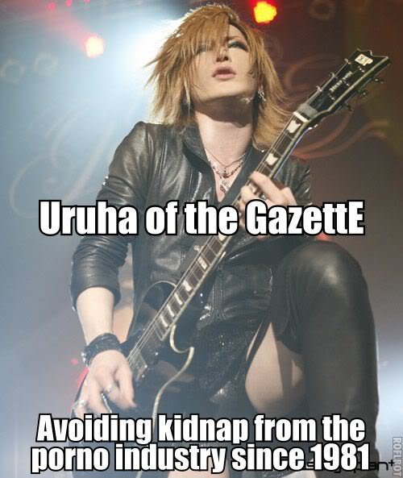 |
PSC (peace and smile company)’nin ağır toplarından Gazette underground bir tarz olan visual kei’yi Japonya’da popüler rocka entegre edebilen ilk grup. Bu sene 10. yıllarını kutluyorlar. Çok geniş bir hayran kitlesine sahipler. Forumlarında 58 yaşında ev kadınlarından, liseli gotik lolitalara, koskoca işadamlarından, yakuza özentisi genç delikanlılara kadar her çeşit insan var. Şarkılarında ensest gibi ağır konuları işlemeyi severler. Sahne performansları ve enstrüman hakimiyetleri çok iyidir. Visual Kei’de en önemli nokta canlı performans. Her şeyin teatral olması şart.
Filth in the Beauty benim favori parçalarımdan (Ne biçim şarkı demeyin. “Katherine’i Bagaja Attım” şeklinde parçaları da var.) Parçaların çoğu solist Ruki tarafından yazılıyor. Her şarkının bir hikayesi var yani. Filth in the beauty direkt ensesti hedef alıyor. Ruki’nin saplantılarından. Bir diğer acayip klipleri Burial applicant. Klip aslında japonya’da özellikle 2.dünya savaşından sonra çok yaygınlaşan “Oyako Shinju’dan” söz ediyor. (Aile büyüklerinin çocukları öldürdükten sonra intihar etmesi. Bir çeşit Kamikaze Without a Cause ) Ekonomik durgunluk döneminde maddi olarak çocuklarına bakamaz hale gelen ebeveynlerin bir anda karar verip bütün çocuklarını öldürdükleri bir dönem daha olmuş. İlk cinayetten sonra salgın büyümüş ve dalga dalga devam etmiş. (Yav… Bu adamlar?!?! Neyse artık bir şey demiyorum yoruldum gayrı.)
Bu arada Ruki’nin The Invisible wall‘daki kırık ingilizcesini seviyoruz. Güzel şarkıydı bence. Sorrow made youuuu… Sorrow made youuuu…
Taion Gazette’nin en çarpıcı canlı performanslarından biri. Junko Furata adlı bir lise öğrencisinin 5 tane sınıf arkadaşı tarafından kaçırılıp 40 gün işkenceden sonra öldürülmesi o yıllarda tüm Japonya’yı sarsan en büyük cinayet haberlerinden biridir. Wikipedia haberi çok sansasyonel bulduğu için sayfayı sansürledi. Ama şuradan bütün hikayeye ulaşabilirsiniz. Hikaye ağır, baştan uyarıyorum. Mesela sosyoloji dersi aldıysanız bir ihtimal “Kitty Genovese” ismini duymuşsunuzdur. Eğer o hikaye sizi etkilediyse Junko’ya sakın sakın bakmayın. Sinirinizi bozmayın. Junko’nun hikayesi bir şehir efsanesi değil. Chat odalarında konuştuğum pek çok insan gazetelerden ve haberlerden o dönemi anlattı. Wikipedia internetin “İngilizce” kısmına ağırlık vermeye meraklı ya. Önce sildiler yarısını yazının. “Fox News’mü canım burası.” şeklinde tartışıyorlar hala sayfada “Şu oldu mu? Bu oldu mu?” diye. Fakat haberin Japonya’dan dünyaya sızması hükümetin hiç hoşuna gitmemiş. Katiller biraz ucuz sıyırdılar çünkü. Bence neredeyse Kitty Genovese kadar önemli hatta çok daha önemli bir vaka. Sosyolojik bir fenomen. Ruki genelde bir Taion, bir de Reila şarkısını söylerken kendini kaybeder biraz. Süper deli bir hayran kitlesi vardır. Ergen kızlarla, Kaliforniya’lı eski hippie amcalar falan birbirine girer. Gitaristleri Reita’yı suratının yarısını kapatan burun bantları olmadan zor görürsünüz. Harajuku’da ki bütün bantlı ablalar aslında Reita cosplay‘i yapıyor. Suratının sadece yarısıyla herif seks sembolü oldu. Böyle garip bir dünyadır işte j rock dünyası. Hep bir ağızdan haykıralım efendim, arkama koroyu da alayım lütfen….“GAZEROCK IS NOT DEAD!”


{kind=link}
{kind=link}
{kind=link}
{kind=link}
{kind=link}
{kind=link}
{kind=link}
{kind=link}
{kind=link}
{kind=link}
{kind=link}
{kind=link}
{kind=link}
{kind=link}
{kind=link}
{kind=link}
{kind=link}
İlk defa duyanlar için bilgilendirici bir yazı olmuş. Japon gruplar nedense dünyada isimlerini pek duyuramıyorlar (Loudness dışında) son yıllarda X Japan yeniden birleştikten sonra dünyaya açılmaya başladı.
Merhabalar.
Hayranlığı L’arc en Ciel’le tanımış olan ben, bir şeyi düzeltmeden edemeyeceğin. Hyde eski vokal değil. L’arc en Ciel hala 4 üyesiyle devam eden bir grup. Hyde aynı zamanda bir Vamp üyesi, solo kariyeri de var. Ama bir ayrılık söz konusu olmadı ve olmayacak da umarım.
burcu hanım şu an durum: http://www.leafly.com/indica/northern-lights ….. velhasın miyaviyi özledim 🙂 ve efenim sizide 🙂 keşke yanında olaydım…
ya şu hyde ın sesi sanatı beni bayağı etkilemişti.hala hayranı sayılırım ancak L’arc en ciel bitti mi kaldı mı karier olarak ben dewam ediyo diye biliyorum.hala siteleri duruyo artı daha 2012 new york konseri muhteşemdi yarım senede nasıl değişti işler bence de ayrılmamıştır o daha.niyona katılıyorum